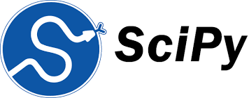
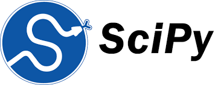
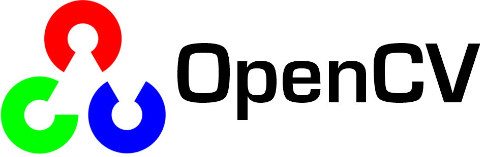
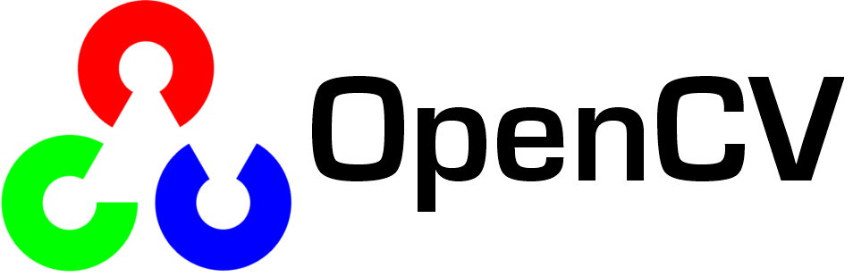

Satyaki Roy Chowdhury
I am a PhD Student in CS @ The Ohio State University. I am advised by Dr. Hari Subramoni. My research interests lie at the intersection of computer vision, image processing and learning representations.
I completed my bachelor’s in Electrical & Electronics Engineering (minor in Mathematics) at Shiv Nadar University, India, where I worked with Prof. Madan Gopal on object recognition and interned at HP Inc. Later, I earned my M.S. in ECE from The Ohio State University, advised by Prof. Golrokh Mirzaei focusing on deep learning for adult glioma segmentation. Beyond academics, I’m an avid swimmer and enthusiastic badminton player.
Email: chowdhury.207[at]osu.edu


 ☎️ +1 (650) 661-9011
☎️ +1 (650) 661-9011
News
- Aug 16, 2025: Started PhD at The Ohio State University.
- May 4, 2025: Completed my Master's from The Ohio State University.
- Jan 3, 2025: One paper has been accepted at the ISBI 2025 to be held in Houston, Texas on April 14 – 14, 2025.
- Aug 22, 2023: Started my MS in Electrical and Computer Engineering at The Ohio State University.
Publications

Hybridization of Attention UNet with Repeated Atrous Spatial Pyramid Pooling for Improved Brain Tumor Segmentation
2025 IEEE 22nd International Symposium on Biomedical Imaging (ISBI) 2025.
Familiar With
Frameworks:


 


 

IDEs: